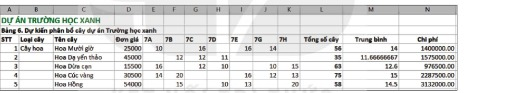
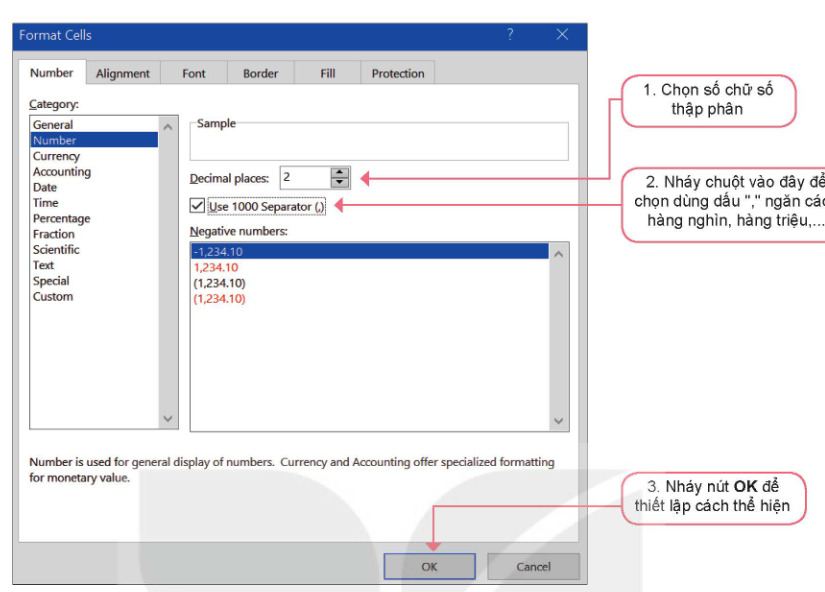
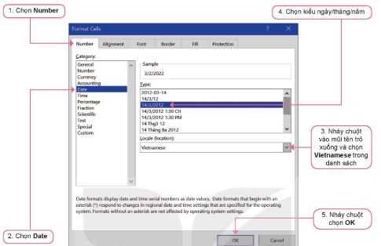
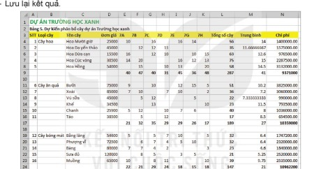

Dành cho giáo viên
Theo dõi lớp
| Học sinh / Nhóm | Đã nộp | Cập nhật |
|---|
Bước 1
1 Khởi động
Khám phá Hình ảnh khởi động
Trò chuyện Cùng An, Minh và Khoa
Đoạn trò chuyện gợi mở (không có trong SGK)
Minh: Các bạn xem bảng tính dự án của tớ này.
An: Chữ bị che mất một nửa, số thì dài khó đọc quá.
Khoa: Mình định dạng lại cho đẹp: chỉnh độ rộng cột, căn lề, kẻ khung, tô màu tiêu đề.
An: Chữ bị che mất một nửa, số thì dài khó đọc quá.
Khoa: Mình định dạng lại cho đẹp: chỉnh độ rộng cột, căn lề, kẻ khung, tô màu tiêu đề.
Khởi động Nhận xét bảng tính dự án
Quan sát một phần bảng tính của dự án Trường học xanh trong Hình 9.1, em có nhận xét gì? Có cần chỉnh sửa, định dạng hay trình bày dữ liệu cho đẹp hơn không?

Ghi bài Khởi động
Sau khi thầy cô chốt, em chép nội dung dưới đây vào vở.
Bước 2 · Hình thành kiến thức mới
2.1 Định dạng dữ liệu số
Hoạt động 1 Làm quen với lệnh định dạng dữ liệu (Format Cells)
1. Cột dữ liệu Trung bình cần điều chỉnh gì để hiển thị dễ đọc, dễ so sánh hơn? 2. Dữ liệu tại cột Chi phí nên trình bày lại như thế nào để phù hợp với dữ liệu là số tiền?
a) Định dạng dữ liệu số. Dữ liệu số trong bảng tính được hiểu là các số nguyên hoặc số thập phân (là số có phần số nguyên và phần thập phân). Tất cả các phần mềm bảng tính đều cho phép thiết lập cách định dạng thể hiện các số này. Ví dụ chỉ cho phép hiện bao nhiêu chữ số thập phân, hoặc quy định dùng dấu “,” phân tách hàng nghìn, hàng triệu,… Để thực hiện định dạng các số tại một ô hoặc vùng dữ liệu, em cần chọn vùng dữ liệu và chọn Home, nháy chuột vào mũi tên bên cạnh nhóm lệnh Number để mở cửa sổ Format Cells. Sau đó em nhập các tham số định dạng kiểu dữ liệu số thực trong cửa sổ Format Cells như Hình 9.2: chọn số chữ số thập phân; nháy chuột chọn dùng dấu “,” ngăn cách hàng nghìn, hàng triệu; nháy nút OK.
a) Định dạng dữ liệu số. Dữ liệu số trong bảng tính được hiểu là các số nguyên hoặc số thập phân (là số có phần số nguyên và phần thập phân). Tất cả các phần mềm bảng tính đều cho phép thiết lập cách định dạng thể hiện các số này. Ví dụ chỉ cho phép hiện bao nhiêu chữ số thập phân, hoặc quy định dùng dấu “,” phân tách hàng nghìn, hàng triệu,… Để thực hiện định dạng các số tại một ô hoặc vùng dữ liệu, em cần chọn vùng dữ liệu và chọn Home, nháy chuột vào mũi tên bên cạnh nhóm lệnh Number để mở cửa sổ Format Cells. Sau đó em nhập các tham số định dạng kiểu dữ liệu số thực trong cửa sổ Format Cells như Hình 9.2: chọn số chữ số thập phân; nháy chuột chọn dùng dấu “,” ngăn cách hàng nghìn, hàng triệu; nháy nút OK.

Thử trên bảng mô phỏng: chọn vùng E4:E8 (Trung bình) → bấm Format Cells → Number, 2 chữ số thập phân → OK. Làm tương tự với vùng F4:F8 (Chi phí), chọn thêm Use 1000 Separator.
Đọc hiểu b) Phần trăm · c) Ngày tháng
b) Định dạng dữ liệu kiểu phần trăm. Khi nói đến tỉ lệ phần trăm chúng ta hiểu là các tỉ lệ giữa hai giá trị, ví dụ a/b. Muốn mô tả tỉ lệ này thành các số phần trăm, chúng ta sẽ tính (a/b) × 100(%). Phần mềm bảng tính có lệnh để hiển thị các giá trị (là tỉ lệ giữa hai số a, b nào đó) để giá trị này thể hiện trên bảng tính là số phần trăm. Thao tác: đánh dấu vùng dữ liệu, trong cửa sổ Format Cells, chọn Number, chọn kiểu Percentage, nháy chuột chọn OK.
c) Định dạng dữ liệu ngày tháng. Các phần mềm bảng tính cho phép nhập dữ liệu ngày tháng theo khuôn dạng: mm/dd/yyyy, tức là nhập tháng, sau đó nhập ngày, sau đó là năm, các số cách nhau bởi dấu “/” hoặc “–”. Mặc định dữ liệu ngày tháng cũng thể hiện trên màn hình dưới dạng “mm/dd/yyyy”. Muốn thay đổi lại cách thể hiện ngày tháng: đánh dấu vùng dữ liệu, trong cửa sổ Format Cells chọn Number → Date → Locale Vietnamese → chọn kiểu ngày/tháng/năm → OK (Hình 9.5). Lưu ý: việc chỉnh sửa chỉ thay đổi cách hiển thị, còn việc nhập dữ liệu vẫn cần tuân theo thứ tự mặc định của phần mềm.
Lưu ý: Dữ liệu ngày tháng có thể thực hiện các phép cộng với số nguyên (mỗi số nguyên được tính là một ngày) và phép trừ hai dữ liệu ngày tháng (Hình 9.6).
Lưu ý: Dữ liệu ngày tháng có thể thực hiện các phép cộng với số nguyên (mỗi số nguyên được tính là một ngày) và phép trừ hai dữ liệu ngày tháng (Hình 9.6).

Ghi bài 1. Định dạng dữ liệu số
Sau khi thầy cô chốt, em chép nội dung dưới đây vào vở.
Bước 2 · Hình thành kiến thức mới
2.2 Trình bày bảng tính
Hoạt động 2 Tìm hiểu một số lệnh trình bày bảng tính
1. Theo em việc định dạng dữ liệu và trình bày bảng tính có khác nhau không? 2. Các lệnh trình bày bảng tính hay định dạng dữ liệu có làm thay đổi dữ liệu trên bảng tính không?
a) Các lệnh chèn, xoá, ẩn, hiện hàng và cột.
a) Các lệnh chèn, xoá, ẩn, hiện hàng và cột.
- Xoá hàng, cột: nháy chuột vào tên của cột hoặc hàng để chọn cột hoặc hàng muốn xoá. Nháy nút phải chuột vào chỗ chọn, chọn Delete. Có thể chọn nhiều hàng (cột) để xoá đồng thời.
- Chèn thêm một hàng, cột mới: chọn hàng (dưới hàng muốn chèn) hoặc cột (bên phải cột muốn chèn). Nháy nút phải chuột vào chỗ chọn, chọn lệnh Insert. Hàng mới sẽ được chèn vào bên trên hàng em chọn, cột mới sẽ được chèn vào bên trái cột em chọn.
- Làm ẩn, hiện hàng hoặc cột: trong khi làm việc, một số hàng hoặc cột của bảng tính có thể ẩn đi với mục đích làm gọn bảng tính, dễ quan sát. Muốn ẩn hàng hoặc cột, nháy nút phải chuột vào chỗ chọn và chọn Hide. Muốn hiển thị lại, em chọn các hàng, cột xung quanh vị trí hàng, cột bị ẩn đi, nháy nút phải chuột và chọn Unhide.
Thử trên bảng mô phỏng (bảng như Hình 9.8): nháy tên cột hoặc tên hàng để chọn (kéo trên tên để chọn nhiều), rồi bấm Ẩn, Hiện, Chèn, Xoá hàng/cột; đánh dấu B4:B8 rồi bấm Gộp ô.
Ghi bài 2. Trình bày bảng tính
Sau khi thầy cô chốt, em chép nội dung dưới đây vào vở.
Bước 2 · Hình thành kiến thức mới
2.3 Tính chất của các hàm trên bảng tính
Hoạt động 3 Tìm hiểu thêm tính chất một số hàm tính toán cơ bản
Giả sử nhóm em lập bảng dữ liệu như Hình 9.12 để theo dõi tiến độ thực hiện dự án Trường học xanh. Dữ liệu được nhập vào bảng có thể là số liệu cụ thể hoặc có thể ghi “Không” nếu lớp không có cây này, hoặc ghi “Đang làm” nếu lớp đã thực hiện nhưng chưa có số liệu, ghi “???” nếu chưa biết thông tin gì. Cột cuối cùng luôn tính Tổng số cây theo từng loại (ô J5 là =SUM(C5:I5)), hàng cuối sẽ đếm số loại cây đã trồng của mỗi lớp (ô H9 là =COUNT(H4:H8)). Các kết quả của bảng dữ liệu này có luôn đúng hay không? Vì sao?
Các hàm tính toán của bảng tính điện tử như SUM, AVERAGE, COUNT, MIN, MAX sẽ chỉ tính toán trên các ô chứa dữ liệu số và bỏ qua các ô chứa dữ liệu dạng văn bản hoặc ô trống. Tính chất đặc biệt này giúp cho bảng dữ liệu theo dõi quá trình thực hiện dự án như Hình 9.12 sẽ luôn cho kết quả đúng.
Các hàm tính toán của bảng tính điện tử như SUM, AVERAGE, COUNT, MIN, MAX sẽ chỉ tính toán trên các ô chứa dữ liệu số và bỏ qua các ô chứa dữ liệu dạng văn bản hoặc ô trống. Tính chất đặc biệt này giúp cho bảng dữ liệu theo dõi quá trình thực hiện dự án như Hình 9.12 sẽ luôn cho kết quả đúng.
Ghi bài 3. Tính chất của các hàm
Sau khi thầy cô chốt, em chép nội dung dưới đây vào vở.
Bước 2 · Thực hành
2.4 Thực hành: Hoàn thiện dữ liệu dự án Trường học xanh
Nhiệm vụ Trang tính 5. Tổng kết
Nhiệm vụ: tạo trang tính mới để nhập dữ liệu dự kiến phân bổ cây; nhập và sao chép dữ liệu; thiết lập công thức tính chi phí trồng mỗi loại cây và chi phí của toàn bộ dự án; định dạng dữ liệu.
Hướng dẫn:
Hướng dẫn:
- a) Tạo trang tính mới: mở tệp THXanh.xlsx, tạo thêm trang tính mới đặt tên 5. Tổng kết.
- b) Nhập và sao chép dữ liệu: sao chép toàn bộ dữ liệu của trang tính 4. Dự kiến kết quả sang trang tính 5. Tổng kết (bảng mô phỏng đã có sẵn). Sửa lại tên bảng tại ô A2 là: Bảng 5. Dự kiến phân bổ cây dự án Trường học xanh.
- c) Tính chi phí trồng mỗi loại cây và của toàn bộ dự án: nháy chuột chọn cột D (cột của lớp 7A), chọn Insert để chèn thêm cột; đặt tiêu đề cho cột mới tại ô D3 là Đơn giá; sao chép đơn giá các loại cây từ trang tính 3. Tìm hiểu giống cây sang cột Đơn giá (chú ý các hàng trống giữa các loại cây — trên bảng mô phỏng bấm nút Sao chép đơn giá từ trang tính 3); tạo thêm cột Chi phí bên phải cột Trung bình (cột N); nhập công thức Chi phí = Đơn giá × Tổng số cây cho các ô trong cột Chi phí; tính tổng chi phí mỗi loại cây và toàn bộ dự án tại các ô N9, N17, N24, N25 (nhập trực tiếp hoặc sao chép công thức từ các ô E9, E17, E24, E25).
- d) Định dạng dữ liệu cho trang tính (có thể theo mẫu Hình 9.13) và lưu kết quả.

Ghi bài 4. Thực hành
Sau khi thầy cô chốt, em chép nội dung dưới đây vào vở.
Bước 3
3 Luyện tập
Luyện tập Câu hỏi SGK trang 50
Ghi bài Luyện tập
Sau khi thầy cô chốt, em chép nội dung dưới đây vào vở.
Bước 4
4 Vận dụng
Vận dụng Đọc bảng và tính tỉ lệ phần trăm
Có thể làm ngay trên bảng mô phỏng ở phần Thực hành: câu 2 nhập công thức vào cột O rồi định dạng Percentage.
Ghi bài Vận dụng
Sau khi thầy cô chốt, em chép nội dung dưới đây vào vở.